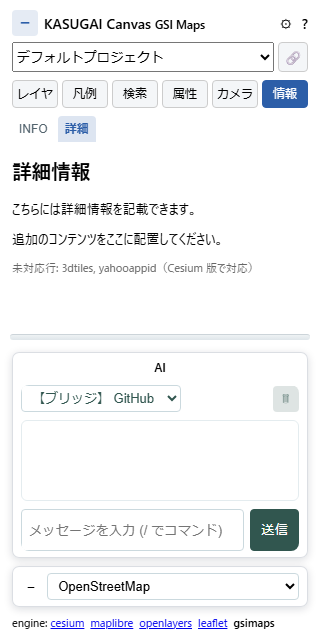

マルチエンジン
web/ をエンジン別フロントに分割し、.kasc プロジェクトを複数の地図エンジンで再生できる構成です。メインエンジンは CesiumJS（開発の主対象・既定エンジン）で、MapLibre / OpenLayers / Leaflet / GSI Maps（※現在調整中）/ Navara（※試験的）は .kasc プレイヤーとしての互換実装です。プロジェクトデータ（projects/）はエンジン非依存で、描画に依存しないコードは web/shared/ に集約しています。
ねらい: 同じ .kasc を「高機能3D（Cesium）」「軽量2D（Leaflet 等）」「地理院地図の UI（GSI Maps）」など、配布先の環境・用途に合ったエンジンで開けます。納品物は .kasc+DATA/+エンジン一式の静的ファイルだけで成立し、受け取り側がエンジンを選ぶ余地も残せます。
🧭 エンジン構成
| フォルダ | エンジン | 位置づけ・対応範囲 |
|---|---|---|
cesium/ |
CesiumJS（メイン・既定） | 全行タイプ（3dtiles: 含む）・FLY・AI ツール・プラグイン・地形/DEM ドレープ・SCENE2D。KASUGAI の全機能が集約される唯一のフル機能エンジン |
maplibre/ |
MapLibre GL（2D プレイヤー） | WebGL ベースの 2D エンジン。全ベクター行・QML・duckdb/sql・属性 UI・6 タブパネル。3dtiles: は deck.gl Tile3DLayer を遅延ロードし、TerrainExtension による 3D Tiles 表面ドレープにも対応。回転・傾斜表示可 |
openlayers/ |
OpenLayers（2D プレイヤー） | OGC 準拠最良の 2D エンジン。MapLibre 相当の .kasc 再生（QML・duckdb/sql・属性 UI）。Canvas レンダリングで WebGL 要件が緩い |
leaflet/ |
Leaflet（2D プレイヤー） | 約 40KB の超軽量 2D エンジン。WebGL 不要の DOM/SVG 描画で古いブラウザでも動作。専用 pane にレイヤーを割り当てて .kasc の積み順を再現（回転系設定なし）。3dtiles: は deck.gl オーバーレイキャンバスで遅延ロード |
gsimaps/ |
GSI Maps（中間エンジン・調整中） | vendored 地理院地図（gsi-cyberjapan/gsimaps）を同一オリジン iframe で組み込み、.kasc を GSI/Leaflet API 経由で再生。上流コードは無改変で、変換・制御はすべて中間層が担う（下記「GSI Maps エンジン」節） |
navara/ |
Navara（試験的・写実3D） | @navaramap/three（Rust/WASM GIS コア + Three.js）による写実 3D プレゼンエンジン。ベクター行・ラスタ行・3dtiles:・cam:/theme: を再生し、大気・太陽光のフォトリアルシーンと quantized-mesh 地形を持つ。wms:/wmts:・3D Tiles ドレープは未対応（下記「Navara エンジン」節） |
各エンジンの特性比較と追加候補の評価は ライブラリ — 地図エンジンの選定と追加候補 を参照してください。
🔀 エンジン選択と切替
?engine=リダイレクト: ルートのweb/index.htmlは?engine=cesium|maplibre|openlayers|leaflet|gsimaps|navara（既定 cesium）を読み、対象エンジンのindex.htmlへリダイレクトします。engine以外のクエリ（project=・kasc=）とハッシュ（ビュー状態）はそのまま引き継ぐため、同じ URL をエンジンを変えて開き直せます- 切替 UI: 各エンジンのパネルにある「engine:」リンク（
shared/engine-switch.js）から別エンジンへ遷移します。現在のクエリとハッシュを引き継ぐため、プロジェクトとカメラ位置を保ったまま切り替えられます（リンクは../?engine=…の相対パスで、GitHub Pages 等のパスプレフィックス配信でも動作） - レイヤ状態の引継ぎ（カレント状態ファイル）: 稼働中のエンジンは自身の状態を Cesium 規約の正典ドキュメント（localStorage
kasugai:session-state）としてshared/session-state.js経由で常時同期し、切替先エンジンが起動時に適用します。詳細な仕様は次節「カレント状態ファイル」を参照してください - URL ハッシュの互換: カメラ状態のハッシュ形式はエンジン共通です（完全 Cesium 規約: 緯度・経度・高さ・pitch・heading の5キーのみ。zoom は URL に書かず、2D エンジンは height と相互換算。heading/pitch も各エンジンの規約へ変換）。変換規則と各エンジンのネイティブハッシュ形式との比較表は V0: システム基本構成 — URL パーマリンク を参照
📄 カレント状態ファイル（session-state）
.kasc がプロジェクトの初期値であるのに対し、カレント状態ファイルは稼働中の現在値（カメラ位置・表示レイヤ・テーマ・ベースマップ・インスペクタの編集中テキスト）を保持するエンジン共通の正典ドキュメントです。物理ファイルではなく localStorage の1レコード（キー kasugai:session-state、JSON）として常駐し、読み書きはすべて shared/session-state.js に集約されています。
正典は Cesium 規約です（メインエンジンが CesiumJS であり、URL ハッシュと cam: 行も同規約のため）。各エンジンは自形式 → Cesium 規約へ書き込み時に正規化し、読み込み時に自形式へ変換します。
スキーマ（v: 1）
| フィールド | 型 | 内容 |
|---|---|---|
v / at / engine | number / number / string | スキーマ版・最終更新時刻(ms)・最後に書いたエンジン ID |
project / kasc | string|null | 書込み時点の ?project= / ?kasc=（適用はこれらの完全一致が条件） |
camera | object | latitude/longitude(deg)・height(m・楕円体高)・zoom(256pxタイル基準・正典 height から導出。URL ハッシュ自体に zoom キーは無い)・pitch(直下=-90・水平=0)・heading(北=0・時計回り)。すべて Cesium 規約の正典値 |
inspector | string | 現在の .kasc テキスト全文（ファイル内容ではなく編集後を含む現在値） |
theme | string|null | #theme-select の選択値（theme: 名。未選択は null） |
basemap | object | {id, title}（選択中ベースマップ。title は base: 行の item.title 正典） |
vis | object | {完全タイトル: bool}（listLayers() の title を「グループ/名前」へ正規化した可視性マップ） |
ライフサイクル
- 書き込み（変化イベント駆動）:
session-stateは同期対象ではなくエンジンの内部データそのもの（現在値の正典）です。稼働エンジンはbindSessionState(engine)で正典を結び、状態変化のイベントが起きた時点でだけ反映します — 定期採取・ポーリングは存在しません。検知面はエンジン非依存の3系統: DOM のinput/change捕捉（インスペクタ編集・テーマ/ベースマップ選択・レイヤチェック）、history.replaceStateフック（全エンジンがカメラ移動時に正典ハッシュを書く共通経路）、kasugaiApiメソッド呼出し（AI ツール等の API 経路）。反映は debounce＋内容差分ガードで、無変化なら書き込みません。起動時に現在値を構築し、タブ終了pagehide・非表示遷移時は即時反映します。採取元はkasugaiApi（listLayers/listBasemaps/getViewInfo/getCamera/getInspectorText）と DOM（#inspector-input/#theme-select）。正規化の要点: カメラは正典化済みの URL ハッシュ値を優先し、欠けた分だけgetViewInfo（pitchDeg−90 変換）/getCamera（Cesium pitch 直値）で補います — MapLibre の 512px 基準 zoom のようなエンジン固有値が正典へ紛れ込むのを防ぐためです - 適用判定: 起動時に
matchSessionState()を呼び、project/kascが URL と完全一致かつatが TTL 120 秒以内なら遷移・継続セッションとして復元対象になります。読み取りで消去はしません — ファイルは常駐し、引き継いだ側のエンジンが以後の書き込み主になります（別タブで同じプロジェクトを開いても「生きている」状態が続きます） - 消費は起動時の1回のみ（消費1回ガード）:
matchSessionState()はモジュール評価時に一度だけ呼んで pending 変数へ保持し、初回描画で消費（null 化）します。loadProject/applyProjectなどプロジェクト切替で再入する関数内で毎回呼んではいけません — ファイルは常駐するため、?project=が書き替わる前の切替直後でも一致判定を通ってしまい、旧プロジェクトのinspector/visが新プロジェクトへ誤適用されます - 初期表示: 一致する鮮度内セッションが無い起動は「初期表示」とみなし、各エンジンは
.kascファイルの初期値で描画します（カレント状態は適用しません）
.kasc（プロジェクトの初期値）と session-state（稼働中の現在値）は役割が異なります。起動したエンジンは .kasc を一度読んで session-state（現在値）を構築し、以後はすべてのエンジンが session-state を正典として常時参照・更新します — 切替先エンジンも別ドキュメントではなく同じこの正典を引き継ぎます：
sequenceDiagram
autonumber
participant K as .kasc
初期値（プロジェクトファイル・不変）
participant A as エンジンA
(起動)
participant S as session-state
現在値（localStorage・常駐・正典）
participant B as エンジンB
(切替先)
K->>A: 起動時に読み込む (初期値)
A->>S: 現在値を構築（以後は S が正典）
loop 稼働中は常時
A->>S: 状態変化のたび更新
(イベント駆動)
end
A->>B: engine リンクで遷移
(クエリ・ハッシュ継承)
Note over B: 起動は A と同じ構造。
正典を読んで開始するだけ
B->>S: 起動時に正典を読み込む
(消費1回ガード)
loop 稼働中は常時
B->>S: 状態変化のたび更新 (イベント駆動)
end
Note over K: .kasc は初期値のまま不変。
稼働中の正典は常に session-state
復元の照合ルール
- カメラ:
sessionBootView()が URL ハッシュ →session.cameraの順で解決します（切替時はハッシュが常に最新のため、ファイル値はハッシュ欠落時のフォールバック） - 可視性:
sessionVisChanges()が「完全タイトル（グループ/名前）→ 葉名（一意のときのみ）」の2段照合で適用差分を返します。グループ配下レイヤも確実に復元されます - テーマ:
#theme-selectの選択値のみ復元します（実表示は vis マップが担うためchangeは発火させません） - ベースマップ:
kasugaiApi.setBasemap（none/transparent等の疑似項目を扱える）を優先し、API 未生成や不一致の場合は#basemap-selectの option を title/葉名/id で直接選択してchangeを発火します - インスペクタ: 切替元の .kasc テキストをそのまま描画ソースに使います（未保存の編集・行追加・
where=フィルタも引き継がれます）
命名規則と拡張方針（2段ルール）
ドキュメントのルート直下に無印で並ぶフィールドはすべて Cesium 規約の正典値と決め、それ以外の値は名前で区別します。将来の拡張（グループ展開状態・凡例フィルタなど）は v を据えたままフィールド追加で行い、以下の規則に従います：
- 規約・単位が異なる別表現の値 →
x-プレフィックス: 例えば MapLibre の 512px 基準 zoom を残したい場合はx-zoomNativeのように、規約が分かる名前を付けます（既存コードのpitch（Cesium 規約）vspitchDeg（エンジン固有）の区別と同じ考えです） - エンジン固有情報 →
engines.<id>名前空間: Navara の photoreal/fx 設定のような他エンジンと共有しない値はengines.navara.*のようにエンジン ID で隔離します
🧩 エンジン非依存コア（web/shared/）
エンジン横断のコードは shared/ に集約し、各エンジンの app.js は描画層と薄いアダプタを持つ構成です。新しい 2D エンジンの追加は「shared の各モジュールを使い回し、描画フックだけ実装する」形で行えます。
kasc.js— .kasc 行パーサー＋プロジェクトローダー。cam↔zoom 変換・URL ビュー読み書き・テーマ（theme:）・ブックマーク（cam:行 / QGIS XML）・?kasc=直読みを担当vector-load.js/vector-decode.js/gpkg-worker.js— ベクター系行タイプ（geojson:/geoparquet:/flatgeobuf:/gpkg:/csv:/duckdb:/sql:等）を GeoJSON FeatureCollection へ正規化するローダー。GPKG は sql.js(SQLite WASM) Worker で別スレッド処理qml-style.js/qml-2d.js— QGIS レイヤースタイル（.qml）のコンパイルと 2D エンジンへの適用アダプタattr-widget.js/attr-stats.js— 画面下部にドッキングする属性テーブル（レイヤ選択・全文検索・列ソート・行クリック移動・Σ 集計モード）と集計計算geo-tools-2d.js/export-formats.js/tools-dock-ux.js— ツールドック（上部中央バー）の計測・標高断面・見通し・緯度経度グリッド・レイヤーエクスポート（GeoJSON/CSV/TSV/KML/FGB/SHP）。描画は{update(fc)}オーバーレイへ委譲し、MapLibre は GeoJSON ソース・OL は VectorLayer・Leaflet/GSI Maps はmakeLeafletOverlayで描く。tools-dock-ux.jsが対話モード中のドロップダウン自動縮退（1行チップ化）とバー最小化を担当し、Cesium 版も同じ仕組みを使うminimap.js— 表示 → 一般トグルの左下オーバービュー（Leaflet 遅延ロード・範囲矩形または中心マーカー・クリック移動）nav-tools.js/sun-time.js/coords-format.js/coords-local.js— ナビツールバー（表示履歴・矩形ズーム等）・時刻/太陽コントロール・座標書式（度/DMS/UTM/平面直角/ローカル座標・測地系選択）hub-diag.js/lazy-lib.js— bridge-hub(127.0.0.1:8511) 由来レイヤーの失敗原因診断・CDN ライブラリの遅延ロード共通部品player-api.js— 2D プレイヤー向けのwindow.kasugaiApiアダプタ。各エンジンの共通構造（レイヤリスト＋描画フック）へ API 面を構成し、AI チャットの公開ツールは api メソッドの有無で自動絞り込みai-chat.js/mcp.js/box.js— エンジン横断の AI チャット基盤（プロバイダ接続・ツール実行・MCP リモートサーバー接続・Box OAuth）engine-switch.js/session-state.js— 切替 UI とカレント状態ファイル（Cesium 規約の共通状態。上記「レイヤ状態の引継ぎ」）print.js— 印刷・帳票出力（地図画像化→タイトル/凡例/縮尺/方位/出典の帳票合成）i18n.js+i18n/— 共有の翻訳辞書と適用機構deck-drape.js/deck-ground.js— 2D エンジン上の deck.gl 3D Tiles 表示（ドレープ・自動接地）localfs.js—?kasc=localのローカルフォルダ直読み（File System Access API・後述）kasc_loader.js— geo_webview が生成するビューア HTML へのインライン埋め込み用 .kasc ローダー
🗺️ 2D プレイヤー（MapLibre / OpenLayers / Leaflet）
3 エンジンはほぼ同機能の .kasc プレイヤーで、左パネルの 7 タブ（レイヤ・凡例・検索・属性・ツール・カメラ・情報）＋表示・インスペクター・AI の各タブを持ちます。
- 対応行タイプ: 全ベクター行（
geojson:/layer:/geoparquet:/flatgeobuf:/gpkg:/csv:/tsv:/duckdb:/sql:/kml:/kmz:/wfs:/shp:）、画像オーバーレイ（image:・2D では外接矩形化）、ラスタ行（base:/xyz:/wms:/wmts:）、cam:/legend:/info:/theme:/3dtiles:/fly_geojson:。ベクター行のcluster=on/heat=on（点クラスタ・ヒートマップ）も対応。MapLibre はさらにmvt:（MVT ベクトルタイル・TileJSON 対応）とpmtiles:（単一ファイルを Range リクエストで読む・pmtilesライブラリは必要時のみ CDN 遅延ロード）をネイティブの vector ソースとして読めます。3dtiles:は deck.gl Tile3DLayer を含む .kasc のときだけ CDN から遅延ロードし、軽量プレイヤーを維持します。fly_geojson:はフライパス（カメラ巡回）として AI ツールから再生でき、クエリ系レイヤー（gpkg:/duckdb:/sql:）は行の ⏷ ボタンで絞り込み条件を対話的に変更できます - 3D Tiles ドレープ: MapLibre では deck.gl TerrainExtension により 2D データを 3D Tiles 表面へ貼り付け可能（Cesium 版の「ドレープ対象地形=3D Tiles」相当）。
deck-ground.jsの自動接地で絶対高を持つタイルセットを z≈0 に補正します（ground=offで無効化・zoffset=で手動補正） - QML スタイル:
style=の .qml をコンパイルして各エンジンのスタイルへ適用（単一/分類/段階/ルールレンダラ・ラベル・凡例スウォッチ） - 属性・検索: 地物クリックの属性表示、属性値一覧ウィジェット（Σ 集計・CSV/TSV 出力）、ベクター属性検索、カメラタブ（cam: プリセット・QGIS XML 読み書き）
- ツールドック・ミニマップ: 計測・標高断面・見通し・緯度経度グリッド・レイヤーエクスポートは
geo-tools-2d.jsが各エンジンのオーバーレイで描画し、AI ツール（measureDistance等・exportLayer）も共通。地図クリック系モード（計測・範囲選択・作図・断面・見通し）の開始でドロップダウンは自動的に畳まれ、ツール名＋ライブ結果＋パネル再展開/終了ボタンの1行チップだけが残る（結果が残る完了時は「結果チップ」として維持、tools-dock-ux.js）。ツールドックは初期は非表示で、レイヤパネルのプロジェクト行にある🧰ボタン、またはバー右端の − ボタンで開閉する（最小化時は画面上部に何も残らない・実行中ツールのチップのみ残る）。表示 → 一般のミニマップ・グリッドトグルはminimap.jsと連携 - AI チャット:
player-api.jsが提供する kasugaiApi アダプタ経由で共通の AI チャットを利用（公開ツールはエンジンの実装済み api に応じて絞られる） - レイヤ一覧の統一（全エンジン共通）: 行順は .kasc 出現順（
_idx）で Cesium と同一。設定系の非レイヤ行（cam:/base:/theme:/bookmark:/cloud:/plugin:/yahooappid:等のNON_LAYER_TYPES）は一覧に出さず、fly_geojson:はフライパスとして別処理。排他グループ（//）は Cesium と同じ表記 — 見出し input がradio＋exclusiveクラス＋「排他」バッジ、メンバー行はラジオで選択済みを再クリックすると OFF にできます - 未対応行の扱い（グレーアウト統一）: そのエンジンで再現できないレイヤ型の行は、一覧から消さずグレーアウト行（チェック無効・半透明・ツールチップ「このエンジン未対応の形式」）として残します —
session-state正典のレイヤ一覧とパネル表示が一致するため。判定はエンジン能力基準（3dtiles は cesium/players/navara で有効・gsimaps でグレー）。併せて情報タブの「未対応行」警告も出ます
🗾 GSI Maps エンジン（地理院地図組み込み・調整中）
vendored 地理院地図（web/vendor/gsimaps/・上流無改変）を同一オリジン iframe（index_pm.html）として組み込み、左の中間層パネルが .kasc を GSI/Leaflet API 経由で再生します。

※現在調整中: iframe 内の vendored コードを GSI.GLOBALS 内部 API 経由で操作する構造のため AI 制御の安定化が難しく、本エンジンの挙動・ツール仕様は今後変更される可能性があります。
- .kasc → gsimaps の対応: ベクター系行は GeoJSON へ変換して作図リスト（SakuzuListItem）として注入（スタイルは
_-props へ畳み込み）。base:/xyz:/wms:/wmts:は外部タイル（appendOutSideTile）として追加し、地理院タイルのベースは gsimaps 標準ベースマップへマップします。cam:は URL ハッシュと setView、theme:は可視性プリセットとして処理。3dtiles 等の非対応行はレイヤ一覧でグレーアウト表示（消えません）＋情報タブへ警告します - Globe 表示: 上流の「Globe」起動（window.open）をフックして iframe 内表示へ差し替え、左パネルを維持します。Globe は Cesium アプリのため、読み込み済みの .kasc レイヤを viewer へ注入して 3D 表示でき、可視性も双方向で同期します（Globe 中の対応形式は 2D と同一 — 注入経路は GeoJSON と imagery のみで、3dtiles 等のグレー行はどちらでも未対応のまま）。表示中の視点は親 URL ハッシュへミラーされ、「← 2D地図に戻る」で視点を引き継いで復帰します
- レイヤ取り込み: 「地理院地図の表示レイヤを取り込み」ボタンで、地理院地図側で表示中のレイヤを
xyz:行の Canvas レイヤとして .kasc へ追記できます（Globe 表示中は不可） - AI ツール群: 地理院地図の操作は専用ツール17本で AI 制御できます（AI ツール仕様）。表示中レイヤの一覧・取り込み（
listGsiLayers/importGsiLayers）、透過率・積み順・解除（setGsiLayerOpacity/moveGsiLayer/removeGsiLayer）、カタログ検索・表示・直接取り込み（listGsiCatalog/addGsiLayer/importGsiCatalog）、作図取り込み（listGsiSakuzu/importGsiSakuzu）、ベースマップの一覧・切替（listGsiBasemaps/setGsiBasemap。切替はbase:行を .kasc へ自動追記し、他エンジンでも同じベースが再現されます）。ほかに表示中レイヤの一時非表示（setGsiLayerHidden）・作図削除（removeGsiSakuzu）・地点標高取得（getGsiElevation）もあります）。地理院地図側の UI 自体もdata-ui-bridge経由で汎用listUiControls/controlUiの対象になります - ベンダー管理: vendor 実体（約75MB）はリポジトリ・配布 ZIP・インストーラー・ローカル開発・CDN のいずれにも置きません（
gsimaps/vendor.jsonの sha でピン）。供給経路はvendor-proxy-sw.js（vendor 同一オリジン中継・Service Worker・shared/vendor-guard.jsが登録）に一本化されており、SW が/vendor/*を vendor.json のピン先（jsdelivr/gh・失敗時 raw.githubusercontent）から同一オリジン中継するため、github.io のような静的配信やローカル開発でも vendor 未配置のままその場で動作します（Service Worker 前提。?hosted=または localStoragekasugai_hosted_baseで自前ミラー指定も可 — オフライン開発等はtools/fetch_vendor.pyで取得した実体を自前配信してそこを指します）。vendor 更新はvendor.jsonのピン変更のみで完結し、CDN への実ファイル配置はありません。同梱トークンについて:globe/Build/Cesium*には Cesium 公式の公開デフォルトトークン（Mapboxpk.トークン・ion の JWT）が含まれます。これは Cesium が全配布物に同梱する公開仕様（利用時は「自前トークンを設定せよ」の警告を出力する既定動作）であり、シークレットスキャン（detect-secrets・GitHub Push Protection）では false positive として扱います — detect-secrets は.secrets.baseline、GitHub 側は unblock URL の許可で対応済み
🌍 Navara エンジン（試験的）
@navaramap/three（Navara の Rust/WASM GIS コア + Three.js レンダラ）で .kasc を再生する試験的エンジンです。Cesium とは別系統の 3D 描画で、大気散乱・太陽・影のフォトリアルシーン（addDefaultPhotorealScene）と Re:Earth Terrain（quantized-mesh）の地形を備え、写実的な 3D プレゼン用途を検証する位置づけです。エンジン切替 UI では [navara] と括弧付きで表示され、試験的エンジンの目印になっています（ENGINE_LABELS の [] 表記）。
- .kasc → navara の対応: ベクター系行（
geojson:/layer:/geoparquet:/flatgeobuf:/gpkg:/csv:/tsv:/duckdb:/sql:）は shared のローダーで GeoJSON 化して geojson ソースへ流し込み（QML は代表地物のスタイルをレイヤ単位マテリアルへ反映）、base:/xyz:は raster-tile ソース、3dtiles:は 3d-tiles ソースとして追加。cam:・theme:・ブックマーク・legend:・default_style:・fly_geojson:・属性 UI・AI チャット・印刷は shared 共通です。wms:/wmts:・3D Tiles 表面ドレープ・地物単位の凡例フィルタは未対応で、非対応行はレイヤ一覧でグレーアウト表示＋情報タブへ警告します - ベンダー管理: ライブラリは npm ビルド済み dist のスナップショットを
vendor/navara/（navara/vendor.jsonでピン）から importmap で読み込みます。Worker がimport.meta.url相対で生成されるため同一オリジン必須で、外部 CDN 直読みは動きません（地物メッシュ・地形・3D Tiles が停止）。three/postprocessingも peer 参照を同一インスタンスに揃えるため同梱します。vendor 実体は gsimaps と同じくどこにも置かず、vendor-proxy-sw.js（vendor 同一オリジン中継・SW 制御）がvendor.jsonの npm ピン先（jsdelivr/npm）から同一オリジン中継して供給します — ローカルのweb/vendor/は不要です（オフライン開発用に実体が欲しい場合のみtools/fetch_vendor.py+?hosted=ミラー指定） - 写実・地形の操作: 設定ペインの「地形（Re:Earth Terrain）」で quantized-mesh 地形を ON/OFF でき、「写実シーン（大気・太陽・雲）」・影・時刻（UTC）の調整もそこから行います。既定では描画負荷を抑える設定（影 OFF・マルチサンプリングなし）で起動します
📄 プロジェクト直読み（?kasc=）とサーバレス配信
?kasc=<url>: 全エンジンで任意 URL の .kasc を直接読めます。DATA/等の相対参照は .kasc のある URL 基準で解決され、projects/構造は不要です。.kasc+DATA/+起動 HTML とweb/の中身を同じ静的サーバーへ置くだけで配信できます（登録 API 不要）?kasc=local: 2D プレイヤー系エンジンでは、File System Access API で選択したローカルフォルダの.kasc+DATA/をlocalfs:///疑似 URL＋fetch シムで読めます（ホスト版エンジンがローカルフォルダを直接開く「アプリはホスト・データはローカル」の構造）。フォルダハンドルは IndexedDB に永続化されます。Chromium 系限定・フォルダ外参照不可・ローカル XYZ タイルは未対応- geo_webview 連携: QGIS geo_webview のエクスポートは各エンジン用の
<engine>.html（エンジン自動探索・CANVAS_BASE上書き可）とリンク一覧のindex.htmlを .kasc と同じ場所へ出力します。file://で開いた場合は起動中のローカル Canvas（127.0.0.1:8510）へプロジェクトを登録して開きます
🌐 CDN ホスト版（kasugai-canvas-web）
エンジン一式（web/）を CDN ライブラリのように静的配信する専用ホストが kasugai-canvas-web（GitHub Pages）です。「アプリはホスト・データはローカル（または任意 URL）」の構造で、KASUGAI Canvas 未インストールの環境でも .kasc+DATA/ をブラウザ再生できます。
- 起動形式:
…/kasugai-canvas-web/<stage>/<engine>/?kasc=<url>。各ステージ配下に全エンジン（cesium・maplibre・openlayers・leaflet・gsimaps・navara）が同居し、ステージルートの?engine=でも選択できます。?kasc=localならローカルフォルダの .kasc を直接開けます（ホストされたエンジンがローカルのデータだけを読む、CDN ライブラリと同じ使い方） - 2チャンネル:
stable/（既定・リリース版）とunstable/（kasugai_canvas 側mainの最新web/追従）。channels.jsonと各ステージのversion.jsonがバージョン表です - 正本と同期: 正本は kasugai_canvas 側の
web/で、CDN リポジトリは発行物のみ（直接編集しない）。同期はpython tools/publish_cdn.py --channel unstable|stableで行い、どちらのチャンネルもweb/を直接同期します（unstable 経由の格上げではない）。運用は「web/ に配信したい変更 → unstable 同期・リリース時に stable 同期」 - vendor の扱い（gsimaps・navara）: エンジン側は
/vendor/*を参照するだけで、実体は CDN にも置きません。Service Worker（vendor-proxy-sw.js＝vendor 同一オリジン中継）が各エンジンのvendor.jsonピン先（jsdelivr/gh・npm、失敗時 raw.githubusercontent）から同一オリジン中継します（navara は vendor 供給が無いと起動できません） - ローカルアプリ連携（バックエンド検出）: 同一オリジンにバックエンドが無い静的配信では、起動中のローカルアプリ（
127.0.0.1:8510）を自動検出し、/api/*・/projects/*をそちらへ向けます。ホスト版でも AI ブリッジ（Copilot/Devin/Antigravity）や外部登録プロジェクト（QGIS 出力の .kasc+DATA/）・fileWrite/fetchProxy が使えます。Chrome の「ローカルネットワークアクセス」権限が求められたら許可してください（許可で自動リロードして有効化。拒否時は静的機能のみ） - 🖥「アプリで開く」（CDN → アプリ版ハンドオフ）: ベースマップバーの 🖥 ボタンで表示中シーンをアプリ版へ引き渡します。geosuite-hub（
127.0.0.1:8514）があればPOST /canvas/openで .kasc を書き出してアプリへ渡し（起動中は register+switchProject＋アプリの新規タブを開く・未起動は exe 起動）、hub が無くアプリ起動中なら?kasc=/?project=+ビューハッシュの URL で引き渡します。ローカル疎通が全て失敗しブラウザの「ローカルネットワークアクセス」権限が未許可（prompt/denied）の場合は、許可方法を案内するダイアログを表示します（権限非対応ブラウザでは従来通りインストーラをダウンロード）。アプリ版自身でリモートプロジェクトを開いている時は「アプリへ取り込み」ボタンに変わります - ☁「CDN版で開く」（アプリ版 → CDN 逆ハンドオフ）とブラウザ連携設定: アプリ版では 🖥 の左に ☁ が並び、表示中の .kasc をローカルサーバー配信（
127.0.0.1:8510/projects/…）のまま CDN ホスト版で開きます（エンジンは CDN・データはローカル。localfs:// プロジェクトでは非表示）。CDN 側がこの URL を読むにはローカルネットワークアクセス許可が必要で、管理（⚙）→ その他 の「ブラウザ連携」セクション（アプリ版のみ表示）から/api/browser/lnaで Chrome/Edge のポリシーLocalNetworkAccessAllowedForUrlsへyamamoto-ryuzo.github.ioを事前登録・解除できます（HKCU・ブラウザ再起動で反映）。インストーラも同じポリシー登録を行うため、新規導入ではプロンプト自体が出ません - 利用者向けガイド: エンジン説明・QGIS からの出力手順はホスト側の guide/ に集約しています
⚙️ 開発ルール（マルチエンジン前提の設計）
- メインエンジンは CesiumJS: 新機能・UI 整備・AI 制御対応はまず Cesium フロントを対象とし、他エンジンは .kasc プレイヤーとしての互換実装です（Cesium 側の機能追従は必須ではありません）
- コードの置き場: エンジン横断コードは
shared/、エンジン固有コードは各エンジンフォルダへ置きます - AI 制御の共通化: 2D プレイヤーは
player-api.jsの kasugaiApi アダプタで API 面を揃え、AI ツールは実装済みメソッドの有無で公開可否が決まります - パスの起点: API・データパスは
/api/*・/projects/*・/healthのルート起点で書きます（ページ相対はエンジン配下で壊れるため）。認証・公開パスの許可リストは/cesium/起点で、新エンジン公開時は同様に更新します - vendor の無改変原則:
web/vendor/配下は上流スナップショットで一切改変しません。挙動変更は組み込み側（中間層）でフック・差し替え・ラップします